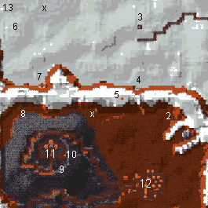

Place: Kriegspire

| 1 | Superior Temple of Baa [ Map ] |
| 2 | Fountain: +5 permanent elemental (fire, electricity, cold and poison) |
| 3 | Agar's Laboratory [ Map ] |
| 4 | Shrine of Cold |
| 5 | Hermit will End Winter for the the [ End Winter Quest] |
| 6 | Obelisk #4 |
| 7 | Cave of the Dragon Riders [ Map ] |
| 8 | Devil Outpost (Demon Lair) [ Map ] |
| 9 | Fountain: +40 Armor class |
| 10 | Shrine of Fire (August) |
| 11 | Castle Kriegspire
[
Map
]
Master Bowmen on top of castle |
| 12 | Kriegspire City [ Map ] |
| 13 | Pedestal [ Place Statues Quest] |
Leave us a message at: mgrounds@hotmail.com